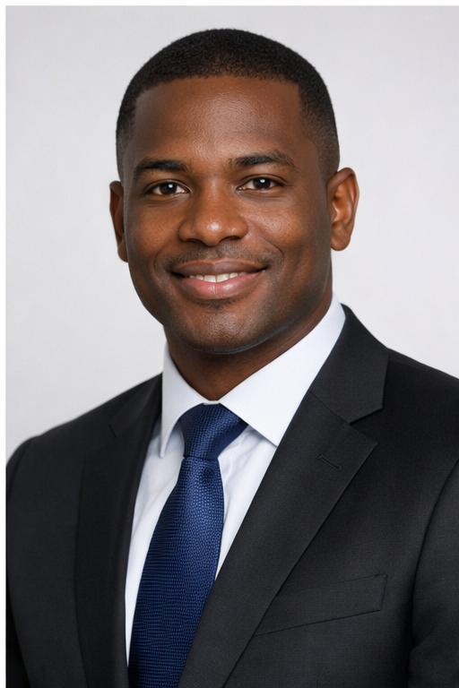

Liderança Executiva
A equipa responsável pela direcção estratégica e operacional do instituto
Eng.º João Baptista
Presidente do Conselho de Administração
Engenheiro Agrónomo com vasta experiência no sector agrário, lidera a transformação do IDA rumo à modernização da agricultura angolana.
Dra. Maria Fernandes
Vice-Presidente do Conselho de Administração
Especialista em desenvolvimento rural e políticas agrícolas, responsável pela coordenação dos programas técnicos do instituto.
Dr. António Dias
Administrador
Gestor especializado em administração pública, responsável pela gestão financeira e recursos humanos do instituto.
Directores Nacionais
Lideranças responsáveis pelas diferentes áreas técnicas e administrativas

Eng.º Carlos Silva
Director Nacional Técnico
Responsável pelos programas de produção agrícola, extensão rural e tecnologia agrária.
Dra. Ana Rodrigues
Directora Nacional Financeira
Gestão financeira, orçamentação e programas de crédito agrícola.
Eng.ª Sofia Martins
Directora Nacional de Planeamento
Planeamento estratégico, monitorização e avaliação de projectos.
Conselho Fiscal
Órgão independente de fiscalização financeira e patrimonial
Dr. José Manuel
Presidente do Conselho Fiscal
Especialista em auditoria e controlo financeiro
Dra. Ana Costa
Vogal do Conselho Fiscal
Especialista em contabilidade pública
Dr. Pedro Santos
Vogal do Conselho Fiscal
Especialista em direito administrativo